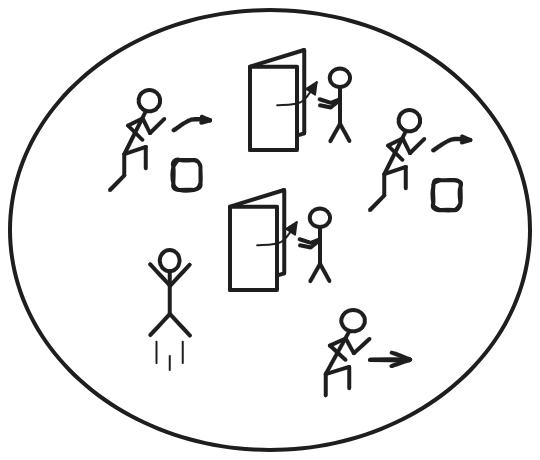
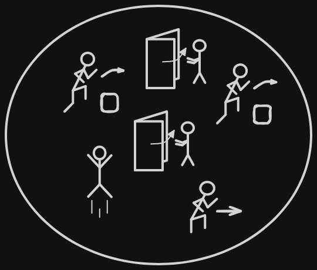
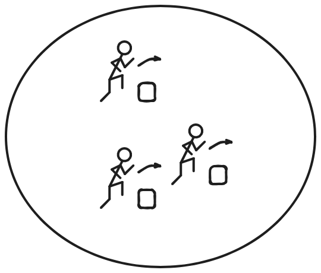
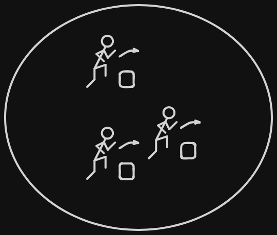
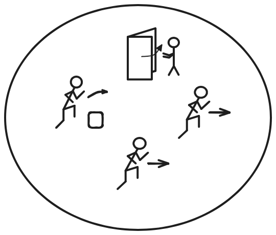
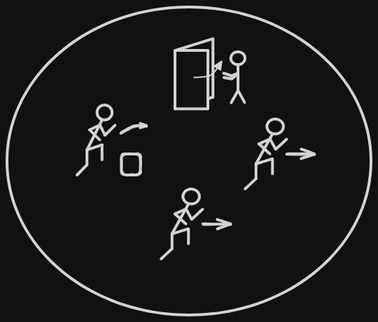
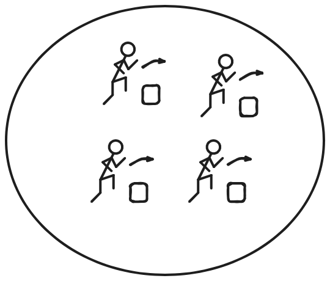
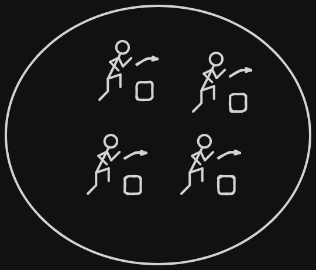
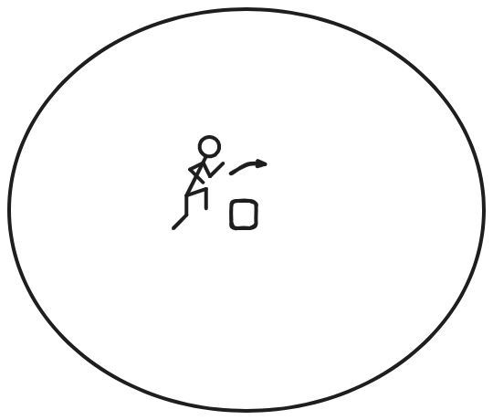
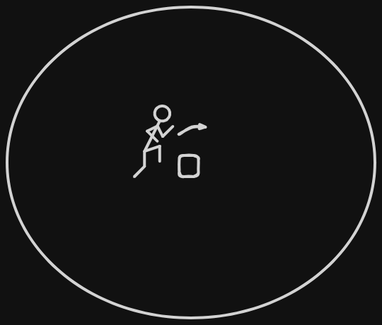

Negazione di una Formula Esistenziale: Esiste
Frase iniziale
Dividiamo la frase in due componenti:
- Esiste un gatto, qui stiamo considerando tra uno e tutti i gatti;
- Quel gatto corre e salta, il gatto corre e saltare contemporaneamente.
Traduzione in forma logica
Con i predicati unari P e Q esprimiamo che:
- C(x) significa che x corre;
- S(x) significa che x salta.
Esiste si scrive ∃ e consideriamo x il generico gatto
Abbiamo così una formula che ci dice come esiste almeno un gatto che segua questa nostra regola, cioè che corre e salta contemporaneamente.
Proviamo ora a negarla.
Negazione della formula
Il modo di negare questa affermazione è più complicato rispetto un ∀, bisogna sostenere che non esista neanche un singolo gatto che salti e corra contemporaneamente. Ossia: Ogni gatto non (C(x) ∧ S(x)).
Abbiamo così stabilito che ogni singolo gatto non possa correre e saltare contemporaneamente.
Applicazione della Legge di De Morgan
Volendo è possibile rendere leggibile questa formula con un minimo di manipolazione.
Si ricorda la seguente equivalenza: ¬(P ∧ Q) ≡ ¬P ∨ ¬Q.
Reinserendo il quantificatore universale:
Otteniamo quindi "Per ogni gatto, il gatto o non corre o non salta", questa frase è completamente equivalente alla formula precedente.
Tabella di verità
Confermiamo questa nostra affermazione con l'uso della tabella di verità:| C(x) | S(x) | ¬(C(x) ∧ S(x)) | ¬C(x) ∨ ¬S(x) |
|---|---|---|---|
| F | F | T | T |
| T | F | T | T |
| F | T | T | T |
| T | T | F | F |
Si è visto quindi anche tramite le tabelle di verità che le due formule siano effettivamente equivalenti.
¬C(x) ∨ ¬S(x) è falso solo quando sia C(x) che S(x) sono vere, questo perché il "¬" inverte il valore di C(x) e S(x) e segue che "∨" è False solo se entrambi C(x) e S(x) sono True.
Visualizzazione tramite insiemi
Insiemi validi per "Esiste una persona che corre e salta":






Come detto in precedenza, per negare questa affermazione bisogna eliminare ogni persona che non stia correndo e saltando risultando nei seguenti insiemi:



